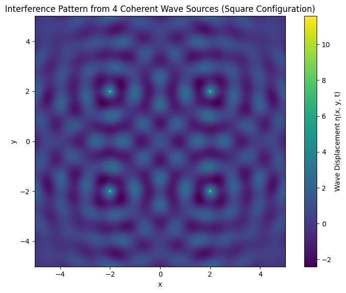
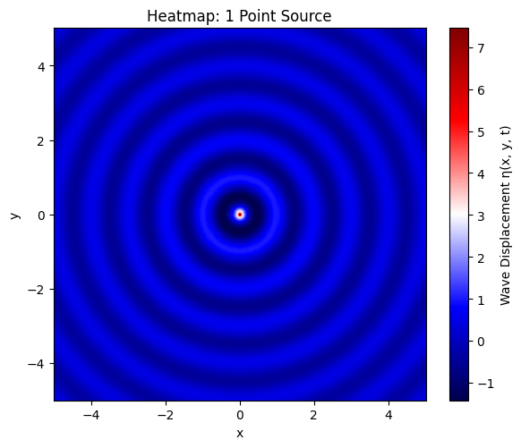
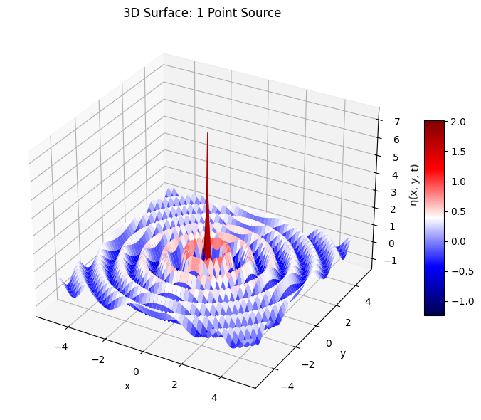
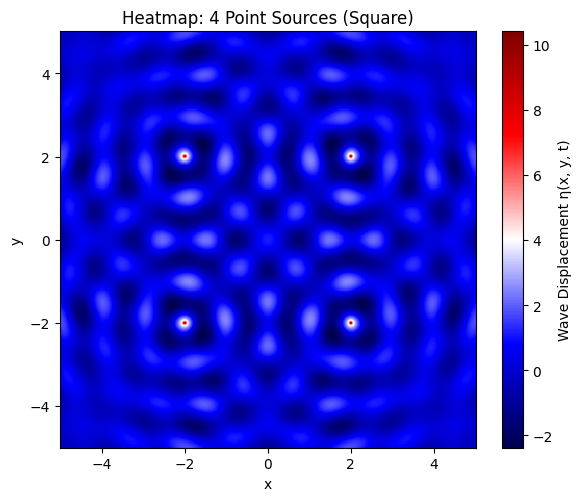
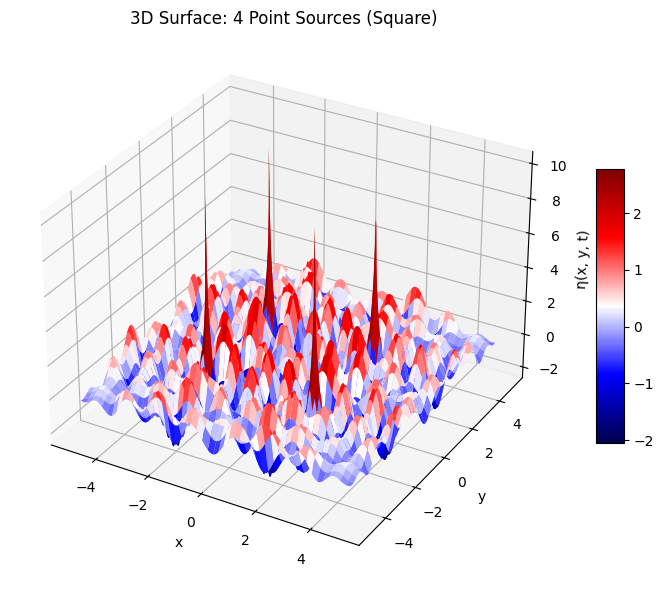
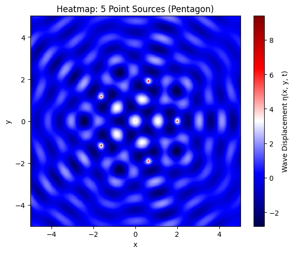
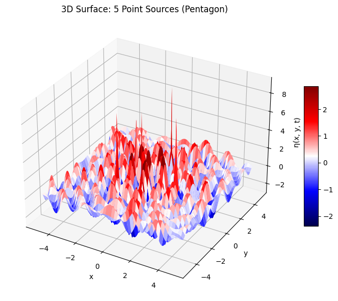

Problem 1
🌊 Interference Patterns on a Water Surface – Wave Modeling
🔷 Step 1: Choosing a Regular Polygon
We begin by choosing a regular polygon as the geometric base for placing wave sources. In this case, we select a:
- Square: A 4-sided regular polygon.
Let the side length be normalized, and the center of the square be located at the origin \((0,0)\). Then, the vertices (wave sources) are placed symmetrically around the origin:
🔹 Vertex Coordinates (Wave Sources)
Let the distance from the center to each vertex be \(R\). Then the coordinates are:
- \((x_1,y_1) = (R,R)\)
- \((x_2,y_2) = (-R,R)\)
- \((x_3,y_3) = (-R,-R)\)
- \((x_4,y_4) = (R,-R)\)
These correspond to the corners of a square centered at the origin.
📐 Step 2: Define Wave Parameters
We define the physical properties of each wave emitted from the sources:
- Amplitude: \(A\)
- Wavelength: \(\lambda\)
- Frequency: \(f\)
- Angular Frequency:
$$ \omega = 2\pi f $$ - Wave Number:
$$ k = \frac{2\pi}{\lambda} $$ - Initial Phase: \(\phi\)
(Assume same phase for all sources for coherence)
🧮 Step 3: Mathematical Model – Single Source

The displacement of the water surface at point \((x,y)\) and time \(t\) from a single point source located at \((x_0,y_0)\) is given by:
where
- \(r = \sqrt{(x - x_0)^2 + (y - y_0)^2}\) is the distance from the source to the point \((x,y)\),
- \(A\) is the amplitude,
- \(k\) is the wave number,
- \(\omega\) is the angular frequency,
- \(\phi\) is the initial phase.
📊 Step 4: Superposition from Multiple Sources

Since the waves from all sources are coherent and identical (same \(A\), \(k\), \(f\), and \(\phi\)), the total surface displacement at any point \((x,y)\) and time \(t\) is:
For a square, \(N=4\), so:
where \(r_i = \sqrt{(x - x_i)^2 + (y - y_i)^2}\) for each source \(i\).
Python codes
# 📦 Import required libraries
import numpy as np
import matplotlib.pyplot as plt
from matplotlib.animation import FuncAnimation, PillowWriter
from IPython.display import Image
# 📐 Define wave and simulation parameters
A = 1.0 # Amplitude
wavelength = 1.0 # Wavelength λ
frequency = 1.0 # Frequency f
phi = 0 # Initial phase
omega = 2 * np.pi * frequency
k = 2 * np.pi / wavelength
# 🎯 Define source positions (Square centered at origin, side length 2R)
R = 2.0
sources = [
( R, R), # top-right
(-R, R), # top-left
(-R, -R), # bottom-left
( R, -R), # bottom-right
]
# 🗺️ Set up spatial grid
x = np.linspace(-5, 5, 300)
y = np.linspace(-5, 5, 300)
X, Y = np.meshgrid(x, y)
# 🎞️ Set up the figure
fig, ax = plt.subplots(figsize=(6, 5))
c = ax.pcolormesh(X, Y, np.zeros_like(X), shading='auto', cmap='viridis', vmin=-2, vmax=2)
fig.colorbar(c, ax=ax, label='Wave Displacement η(x, y, t)')
ax.set_title('Interference Pattern from 4 Coherent Wave Sources')
ax.set_xlabel('x')
ax.set_ylabel('y')
ax.set_aspect('equal')
# 🔁 Animation update function
def update(frame):
t = frame * 0.1
eta_total = np.zeros_like(X)
for (x0, y0) in sources:
r = np.sqrt((X - x0)**2 + (Y - y0)**2) + 1e-6
eta = (A / np.sqrt(r)) * np.cos(k * r - omega * t + phi)
eta_total += eta
c.set_array(eta_total.ravel())
return [c]
# ⚙️ Create animation
frames = 60
anim = FuncAnimation(fig, update, frames=frames, blit=True)
# 💾 Save the animation as GIF
gif_path = "wave_interference.gif"
anim.save(gif_path, writer=PillowWriter(fps=10))
# 🎬 Display the gif
from IPython.display import display
display(Image(filename=gif_path))
📚 Wave Interference Simulation – Superposition of Multiple Sources
🧭 Objective
We simulate the interference pattern generated by multiple coherent point wave sources using the principle of wave superposition on a 2D water surface.
🧮 Step-by-Step Mathematical Procedure
🔹 Step 1: Distance from Each Source to Grid Points
To compute the contribution of each wave source at each grid point \((x, y)\), we calculate the distance from the \(i\)-th source \((x_i, y_i)\):
This quantity determines the phase and amplitude attenuation for each wave at a given point.
🔹 Step 2: Superposition of Waves
For each point on the grid, the total displacement is given by the principle of linear superposition:
Each \(\eta_i\) is the displacement from the \(i\)-th point source:
Where: - \(A\) is the amplitude of the wave, - \(r_i\) is the distance to the \(i\)-th source, - \(k = \frac{2\pi}{\lambda}\) is the wave number, - \(\omega = 2\pi f\) is the angular frequency, - \(\phi\) is the initial phase.
🧪 Simulation Implementation






# 📦 Import libraries
import numpy as np
import matplotlib.pyplot as plt
from mpl_toolkits.mplot3d import Axes3D
# 📐 Wave parameters
A = 1.0 # Amplitude
wavelength = 1.0 # Wavelength λ
frequency = 1.0 # Frequency f
phi = 0 # Initial phase φ
omega = 2 * np.pi * frequency
k = 2 * np.pi / wavelength
# 🗺️ Spatial grid
L = 5 # Domain size
res = 400 # Resolution
x = np.linspace(-L, L, res)
y = np.linspace(-L, L, res)
X, Y = np.meshgrid(x, y)
t = 0.0 # Time snapshot
# 🧮 Helper function to compute total wave displacement
def compute_eta(sources):
eta_total = np.zeros_like(X)
for (x0, y0) in sources:
r = np.sqrt((X - x0)**2 + (Y - y0)**2) + 1e-6
eta = (A / np.sqrt(r)) * np.cos(k * r - omega * t + phi)
eta_total += eta
return eta_total
# 📍 Define source configurations
R = 2.0 # Radius for source placement
# 1 Source (centered)
sources_1 = [(0, 0)]
# 4 Sources (square vertices)
sources_4 = [
( R, R),
(-R, R),
(-R, -R),
( R, -R)
]
# 5 Sources (regular pentagon)
sources_5 = [(R * np.cos(2*np.pi*i/5), R * np.sin(2*np.pi*i/5)) for i in range(5)]
# 📊 Generate all displacements
eta_1 = compute_eta(sources_1)
eta_4 = compute_eta(sources_4)
eta_5 = compute_eta(sources_5)
# 🎨 2D Heatmap Plot Function
def plot_heatmap(eta, title):
plt.figure(figsize=(6, 5))
plt.pcolormesh(X, Y, eta, shading='auto', cmap='seismic')
plt.colorbar(label='Wave Displacement η(x, y, t)')
plt.title(title)
plt.xlabel('x')
plt.ylabel('y')
plt.gca().set_aspect('equal')
plt.tight_layout()
plt.show()
# 🏔️ 3D Surface Plot Function
def plot_surface(eta, title):
fig = plt.figure(figsize=(8, 6))
ax = fig.add_subplot(111, projection='3d')
surf = ax.plot_surface(X, Y, eta, cmap='seismic', linewidth=0, antialiased=True)
ax.set_title(title)
ax.set_xlabel('x')
ax.set_ylabel('y')
ax.set_zlabel('η(x, y, t)')
fig.colorbar(surf, shrink=0.5, aspect=10)
plt.tight_layout()
plt.show()
# 📌 Plot all 2D heatmaps
plot_heatmap(eta_1, "Heatmap: 1 Point Source")
plot_heatmap(eta_4, "Heatmap: 4 Point Sources (Square)")
plot_heatmap(eta_5, "Heatmap: 5 Point Sources (Pentagon)")
# 📌 Plot all 3D surface plots
plot_surface(eta_1, "3D Surface: 1 Point Source")
plot_surface(eta_4, "3D Surface: 4 Point Sources (Square)")
plot_surface(eta_5, "3D Surface: 5 Point Sources (Pentagon)")